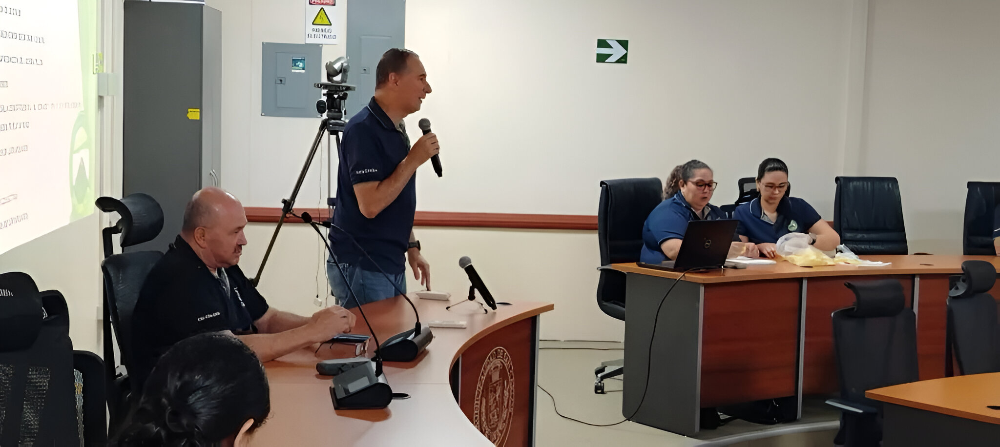

Nuestra misión es representar, defender y promover los derechos e intereses de los trabajadores de la Municipalidad de San Carlos, garantizando condiciones laborales justas, equitativas y dignas. Buscamos fortalecer la unidad, la solidaridad y la participación democrática de nuestros afiliados, impulsando el bienestar integral de los trabajadores y sus familias, así como el desarrollo social y comunitario del cantón.
Ser un sindicato líder, sólido y transparente, reconocido a nivel local y nacional por su capacidad de defender los derechos laborales, fomentar la justicia social y promover la participación democrática. Aspiramos a consolidarnos como un referente en la protección de los trabajadores municipales y en el fortalecimiento del bienestar colectivo, contribuyendo al progreso de San Carlos y de Costa Rica
Solidaridad: Apoyamos a cada trabajador municipal como parte de una misma familia sindical. Justicia: Luchamos por condiciones laborales justas, equitativas y dignas. Transparente: Actuamos con claridad y honestidad en la gestión sindical. Respeto: Promovemos relaciones laborales basadas en la dignidad y los derechos humanos Democracia: Fomentamos la participación activa de los trabajadores en la toma de decisiones. Responsabilidad Social: Reconocemos nuestra función como defensores del bienestar de los empleados y del servicio a la ciudadanía